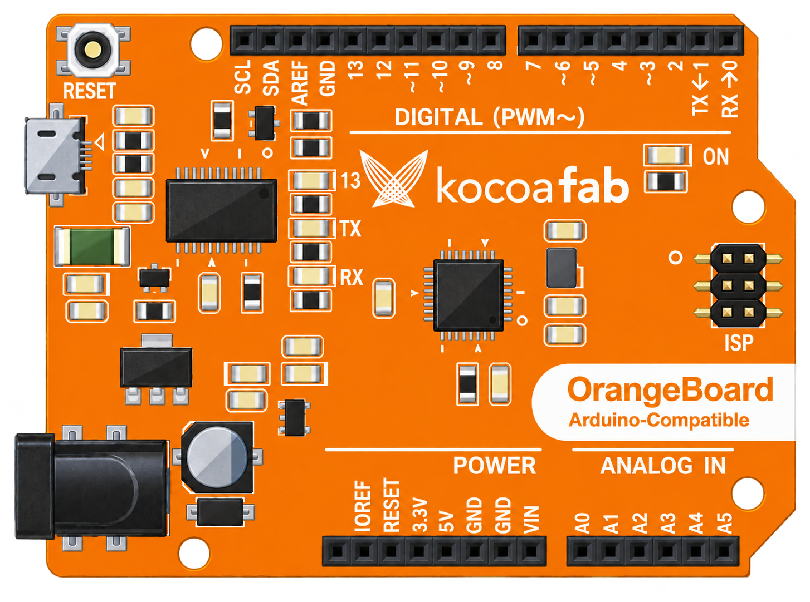

LCD

문자 A가 LCD에 표시되는 과정 · 보조 설명
A → 65 →
수신 데이터:
개념적 시각화입니다. 실제 I²C 통신에는 START·STOP, 장치 주소·ACK·제어 정보 등이 포함됩니다. 문자 코드가 LCD에 직접 전달되는 실제 통신 전체를 재현한 것은 아닙니다.
회로 연결


번역 · 읽어주기 블록을 불러왔습니다.
인공지능 블록 불러오기
A → 65 →
수신 데이터:
개념적 시각화입니다. 실제 I²C 통신에는 START·STOP, 장치 주소·ACK·제어 정보 등이 포함됩니다. 문자 코드가 LCD에 직접 전달되는 실제 통신 전체를 재현한 것은 아닙니다.

번역 · 읽어주기 블록을 불러왔습니다.